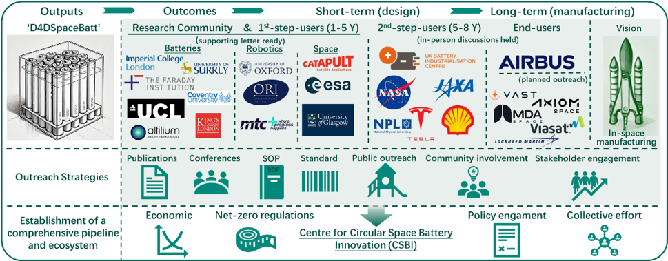

When the battery dies, the spacecraft dies with it.
Today a degraded battery can end a mission that is otherwise working. What if a spacecraft could be serviced, upgraded and kept operating instead of discarded?
Workshop websiteWorkshop videoWhat has happened
participants from 25 organisations in 5 countries at the inaugural workshop on 22 June 2026, Linacre College, built on about two years of conversations with stakeholders across sectors.
Who attended
The UKSA Chief Scientist, the Director of the Harwell Space Cluster and the Director of the ZERO Institute, with operators, manufacturers, agencies and universities.
Outputs
A technical concept paper and a policy briefing, with a draft of interface use cases and requirements for serviceable space batteries.
Selected and shortlisted
Royal Society University Research Fellowship 2025, shortlisted. EPSRC Open Fellowship 2025, shortlisted to Stage 2. Green Future Fellowship 2025 (Royal Academy of Engineering), shortlisted by Imperial College and submitted. UKSA NSIP Call 3, selected as one of three Oxford submissions in August 2026 (outcome pending).
First Circular Batteries in Space workshop
Led and chaired by Dr Yige Sun, with 38 participants from 5 countries and 25 institutions. Funded by the Oxford Policy Engagement Network and co-sponsored by the Satellite Applications Catapult, the Henry Royce Institute and the Faraday Institution. The workshop is featured in the OPEN Annual Report 2025 to 2026.
Finalist, ESA Space for Inspiration 2026
A related project on circular metallic feedstocks for in-orbit servicing, assembly and manufacturing (ISAM) was selected as one of three finalists in the ESA Space for Inspiration 2026 BSGN Academic Challenges.
Next step: a potential national prize challenge
- 2025Royal Society University Research Fellowship, shortlisted
The circular space batteries idea reached the shortlist of the 2025 round. - 2025EPSRC Open Fellowship, shortlisted to Stage 2
The idea was taken to Stage 2 of the 2025 EPSRC Open Fellowship. - 2025Green Future Fellowship, Royal Academy of Engineering: shortlisted by Imperial College and submitted
The idea was shortlisted by Imperial College and submitted to the 2025 Green Future Fellowship. - 22 June 2026First Circular Batteries in Space workshop, Linacre College, Oxford
38 participants, 25 organisations, 5 countries. - August 2026UKSA NSIP Call 3, one of three Oxford submissions
Selected through the University of Oxford internal review as one of three submissions to the call. The outcome is pending. - 12 November 2026Longitude Prize workshop on space batteries
After attending the Circular Batteries in Space workshop, the Longitude Prize team (Nesta / Challengeworks) began exploring the concept as a potential national prize challenge. The follow-up workshop took place on 12 November, with the Henry Royce Institute supporting it. I gave the opening talk on space batteries and the outcomes of the June workshop.
Website for the workshop - December 2026 to March 2027Market validation interviews
Findings feed the policy briefing and the case for a national challenge.
More on the Longitude Prize.
Market validation
Interviews with operators, manufacturers, servicers, insurers and agencies, 30 minutes each, from December 2026 to March 2027. Findings are reported in aggregate in the policy briefing and inform the case for a national challenge.
Why it matters
Power is where spacecraft most often fail
Batteries sit at the heart of the electrical power system. When they degrade, the damage is rarely local: it spreads to the whole mission.
What one lost battery can cost a geostationary spacecraft
A geostationary spacecraft earns £10–26M a year. Retiring it early, because of a battery, puts years of that revenue at risk. A life-extension service for such a spacecraft costs about £9.9M per year.
For 80 years, spacecraft have been built to be thrown away
More than 11,000 satellites orbit Earth and about 30% are inactive, drifting as hazards. Even a 1 cm fragment can travel at around 8 km/s, roughly ten times the speed of a bullet. Yet the services we rely on sit on top of this infrastructure: space-enabled services underpin about 18% of UK GDP, and around 60% of mobile applications depend on signals from space.
The dominant model is still launch, operate, replace. Batteries are not designed to be inspected, isolated or swapped, so a failed battery means a failed spacecraft.
From launch-operate-replace to diagnose-service-sustain
Serviceable, modular, robot-tended batteries would let a spacecraft be assessed, repaired or refreshed in orbit. In-orbit servicing, assembly and manufacturing (ISAM) is one of four priorities of the UK Space Strategy (2026), with robotic maintenance and upgrade of spacecraft as a key part.
Today
One degraded battery can force a full replacement spacecraft, built and launched from Earth.
Serviceable design
Modules that can be accessed, isolated and replaced keep the spacecraft and its value working longer.
The same logic applies on Earth
Batteries that a robot can take apart safely are batteries that can be repaired, reused and recycled. The principles developed for the hardest environment carry over to electric-vehicle batteries and other energy storage.
Current work and partners
A UK-led open design guidance for serviceable battery interfaces is in preparation, with discussions under way with standards groups and platform builders. Partnerships under discussion include the University of Luxembourg, ESA contacts and the Satellite Applications Catapult.

Technical Considerations for Serviceable Spacecraft
Concept paper with the Satellite Applications Catapult (2025), with Dr Yige Sun as co-author.
Oxford Expert Comment
From frontier to feedback loop: why space must become circular, 24 March 2026.
Technical routes under development are not described on this site.